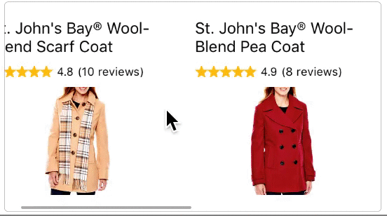

Product recommendations is currently in a limited beta release. If you'd like to participate, please contact Bazaarvoice.
This guide shows how to implement product recommendations in your app.
NOTE: Make sure you have your API Key and Client ID before configuring the managers!
Also, you can check out the product recommendations example app under /Example/BVProductRecsExample!
Import the SDK by adding this line to each file that uses the SDK:
import BVSDK
Then add the following to your AppDelegate's didFinishLaunchingWithOptions function:
BVSDKManager.sharedManager().clientId = "YOUR_CLIENT_ID"
BVSDKManager.sharedManager().apiKeyShopperAdvertising = "YOUR_API_KEY"
BVSDKManager.sharedManager().staging = true // Set to false for production!
Import the SDK by including these headers:
#include <BVSDK/BVSDK.h>
#include <BVSDK/BVRecommendations.h>
Then add the following to your AppDelegate's didFinishLaunchingWithOptions function:
[BVSDKManager sharedManager].clientId = @"YOUR_CLIENT_ID";
[BVSDKManager sharedManager].apiKeyShopperAdvertising = @"YOUR_API_KEY";
[BVSDKManager sharedManager].staging = YES; // set to NO for production!
Product Recommendations are simply views presented to users. They're shown using the same classes you already use in your storyboards, and can be formatted to match your app's visual design. When a set of product recommendations load, your app will receive an array of BVProduct objects that contains its assets, and the app (rather than the SDK) is then responsible for displaying each BVProduct object.
BVSDK provides the following view containers to show multiple product recommendations:
BVProductRecommendationsCollectionViewBVProductRecommendationsTableViewBVProductRecommendationsContainerThese classes should be used as the base view for the container you show your product recommendations in. BVSDK also provides the following view objects to show a single product recommendation:
BVRecommendationCollectionViewCellBVRecommendationTableViewCellBVProductRecommendationViewSimilarly, these classes should be used as the base class of the view you show the product recommendation in.
Let's run through an example implementation of BVProductRecommendationsCollectionView. Following this example will produce a scrollable view of product recommendations, as shown below:
BVRecommendationCollectionViewCellCreate a UICollectionViewCell by selecting File > New > File
Set its superclass as BVRecommendationCollectionViewCell in the DemoCell file, and add appropriate view outlets:
class DemoCell: BVRecommendationCollectionViewCell {
@IBOutlet weak var productName : UILabel!
@IBOutlet weak var price : UILabel!
@IBOutlet weak var numReview : UILabel!
@IBOutlet weak var rating : UILabel!
@IBOutlet weak var productImageView : UIImageView!
@IBOutlet weak var starRating : HCSStarRatingView!
}TODO
TIP: The DemoCell outlets above are suggestions for how to build a custom cell. These outlets map efficiently to each BVProduct data object. However, these outlets are not required and you can configure your cell any way you like!
In DemoCell.xib, add and position your views and hook up your outlets:
BVProductRecommendationsCollectionViewCreate a UIViewController by selecting File > New > File
Add an outlet for the collection view:
class DemoViewController: UIViewController {
@IBOutlet weak var recommendationsView : BVProductRecommendationsCollectionView!
} TODO
Add a UICollectionView to your nib, and set its class to BVProductRecommendationsCollectionView
Hook up the BVProductRecommendationsCollectionView to its outlet, recommendationsView
Fetch product recommendations, and store them in a variable for later use. We also want to set up our recommendationsView delegate and datasource, and register the nib we created earlier
class DemoViewController: UIViewController, UICollectionViewDelegate, UICollectionViewDataSource {
@IBOutlet weak var recommendationsView : BVProductRecommendationsCollectionView!
var recommendations : [BVProduct] = []
override func viewDidLoad() {
super.viewDidLoad()
recommendationsView.registerNib(UINib(nibName: "DemoCell", bundle: nil), forCellWithReuseIdentifier: "DemoCellIdentifier")
self.recommendationsView.delegate = self
self.recommendationsView.dataSource = self
let request = BVRecommendationsRequest(limit: 20)
self.recommendationsView.loadRequest(request, completionHandler: { (recommendations:[BVProduct]) in
self.recommendations = recommendations
self.recommendationsView.reloadData()
}) { (error:NSError) in
// handle error case
}
}
}
TODO
Create and fill out collectionView:numberOfItemsInSection:
func collectionView(collectionView: UICollectionView, numberOfItemsInSection section: Int) -> Int {
return self.recommendations.count ?? 0
}TODO
Create a fill out collectionView:cellForItemAtIndexPath:
Note: the image loading is done with SDWebImage
func collectionView(collectionView: UICollectionView, cellForItemAtIndexPath indexPath: NSIndexPath) -> UICollectionViewCell {
let cell = collectionView.dequeueReusableCellWithReuseIdentifier("DemoCellIdentifier", forIndexPath: indexPath) as! DemoCell
let product = recommendations[indexPath.row]
let imageUrl = NSURL(string: product.imageURL)
// Must set the bvProduct on each cell
cell.bvProduct = product
cell.productName.text = product.productName
cell.rating.text = "\(product.averageRating ?? 0)"
cell.numReview.text = "(\(product.numReviews ?? 0) reviews)"
cell.productImageView?.sd_setImageWithURL(imageUrl)
return cell;
}TODO Objective-C
The app should populate the collection view with product recommendations. Some styling will be needed to look good, however